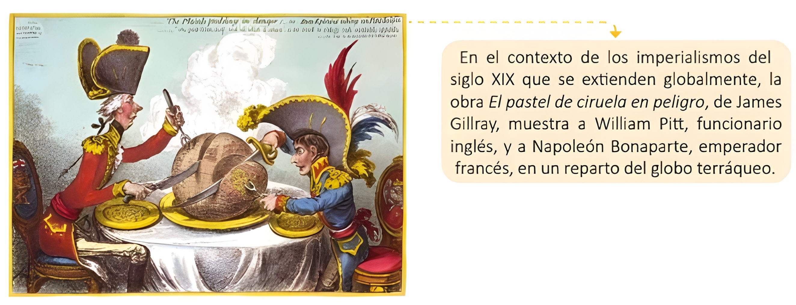
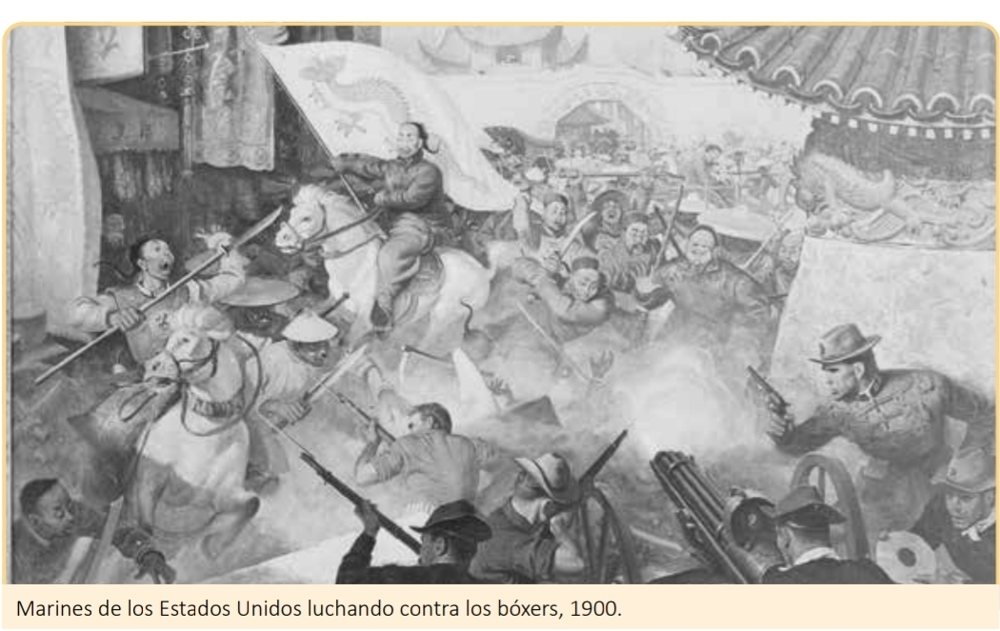

<!DOCTYPE html>
<html translate="no" lang="es">
<head>
  <meta charset="UTF-8">
  <meta name="viewport" content="width=device-width, initial-scale=1.0, maximum-scale=1.0, user-scalable=no">
  <meta name="google" content="notranslate">
  <meta http-equiv="Content-Language" content="es">
  <title>3-1 Imperialismo en los siglos XIX y XX - Octavo</title>
  <link rel="stylesheet" href="civica-core.css">
  <link rel="icon" href="favicon.png" type="image/png">
</head>
<body>
  <div id="app"></div>
  <script src="https://cdnjs.cloudflare.com/ajax/libs/jspdf/2.5.1/jspdf.umd.min.js"></script>
  <script src="students.js"></script>
  <script src="rigo.js"></script>
  <script src="civica-core.js"></script>
  <script src="civica-exercises.js"></script>
  <script src="civica-games.js"></script>
  <rigo-mascot></rigo-mascot>
  <script>
    CIVICA.init({
      id: 'cv_1778548080608',
      container: '#app',
      topic: '3-1 Imperialismo en los siglos XIX y XX',
      level: 'Octavo',
      unit: 'Unidad 3 - Semana 1',
      subjectLabel: 'Ciudadanía y Valores',
      book: { url: 'https://drive.google.com/file/d/1vqsRGuanV8yGfpZU3bsmQExuEzAbQDNz/view?usp=drivesdk', label: 'Libro de Octavo' },
      pdfDesign: 'PopArt', 
      colors: { primary: '#37D469', accent: '#467155', bg: '#4CBD81' },
            examPools: {
              '20176655': 'A',
              '20176656': 'B',
              '20176657': 'A',
              '20176661': 'B',
              '20138869': 'A',
              '20176662': 'B',
              '20176663': 'A',
              '10065035': 'B',
              '20176664': 'A',
              '20305579': 'B',
              '20305581': 'A',
              '20176667': 'B',
              '20176668': 'A',
              '20179890': 'B',
              '20179891': 'A',
              '20293665': 'B',
              '20305583': 'A'
            },
      
      sections: {
        explore: [
          {
            type: 'note',
            html: `
              <div style="background-color: #f0fdf4; padding: 15px; border-radius: 10px; border-left: 5px solid #37D469;">
                <h3>🌍 El Imperialismo (Siglos XIX y XX)</h3>
                <p>Durante el período entre 1875 y 1914, el mundo experimentó un fenómeno sin precedentes: el <strong>Imperialismo</strong>. Países industrializados como Inglaterra, Francia, Alemania y Estados Unidos compitieron para controlar territorios en África, Asia y el Pacífico.</p>
                <p>Buscaban <strong>materias primas</strong> para sus fábricas y <strong>nuevos mercados</strong> para vender sus productos, a menudo imponiendo su poder político, económico y cultural sobre otras naciones más débiles.</p>
              </div>
            `
          },
          {
            type: 'cv_textanswer',
            instruction: 'Reflexiona sobre la imposición cultural (Actividad 1):',
            dataA: [{ q: '¿Qué piensas de que una persona o país busque imponer sus ideas o cultura a otros?', minLength: 15, rows: 3, placeholder: 'Escribe tu opinión aquí...', keywords: ['mal', 'injusto', 'respeto', 'imponer', 'libertad', 'negativo'], keywordsRequired: 1 }],
            dataB: [{ q: '¿Consideras justo que un país fuerte obligue a otro débil a adoptar sus costumbres? ¿Por qué?', minLength: 15, rows: 3, placeholder: 'Escribe tu opinión aquí...', keywords: ['no', 'injusto', 'mal', 'abuso', 'respeto'], keywordsRequired: 1 }]
          },
          {
            type: 'note',
            html: `
              <div style="text-align: center; margin: 15px 0;">
                <h4>Actividad 2: "El pastel de ciruela en peligro"</h4>
                <p>Observa con atención la siguiente caricatura histórica sobre el reparto del mundo.</p>
                
              </div>
            `
          },
          {
            type: 'cv_textanswer',
            instruction: 'Análisis de la imagen (Actividad 3):',
            dataA: [{ q: 'Según la imagen, ¿a quiénes representan los personajes y qué están haciendo con el globo terráqueo?', minLength: 15, rows: 3, placeholder: 'Están representando a...', keywords: ['inglaterra', 'francia', 'pitt', 'napoleon', 'cortando', 'repartiendo', 'dividiendo'], keywordsRequired: 2 }],
            dataB: [{ q: '¿Por qué crees que los personajes cortan el mundo como si fuera un pastel servido en una mesa?', minLength: 15, rows: 3, placeholder: 'Porque el mundo para ellos era...', keywords: ['reparto', 'dividir', 'adueñarse', 'territorios', 'recursos', 'imperio'], keywordsRequired: 1 }]
          },
          {
            type: 'cv_textanswer',
            instruction: 'A partir de la lectura sobre el Opio y los imperios:',
            dataA: [{ q: 'Define con tus propias palabras: ¿Qué es el imperialismo?', minLength: 15, rows: 3, placeholder: 'El imperialismo es...', keywords: ['dominio', 'control', 'imposicion', 'poder', 'territorio'], keywordsRequired: 1 }],
            dataB: [{ q: '¿Cuál era el objetivo principal de los países imperialistas al expandirse por el mundo?', minLength: 15, rows: 3, placeholder: 'Su principal objetivo era...', keywords: ['recursos', 'materias primas', 'control', 'mercados', 'riqueza'], keywordsRequired: 1 }]
          }
        ],
        deepen: [
          {
            type: 'multiplechoice',
            instruction: 'Causas y beneficios del Imperialismo (Actividad 4):',
            dataA: [
              { q: '¿Qué materias primas obtenían las potencias industriales de sus colonias en África y Sudamérica?', options: ['Petróleo, caucho, cobre, oro y diamantes', 'Seda, porcelana, té y especias finas', 'Maquinaria pesada, ferrocarriles y locomotoras'], answer: 0 }
            ],
            dataB: [
              { q: '¿Cuáles fueron algunas de las potencias que más se beneficiaron de la expansión imperial y la industrialización?', options: ['Inglaterra, Francia, Estados Unidos y Japón', 'España, Portugal, Italia y Grecia', 'China, India, Persia y Mongolia'], answer: 0 }
            ]
          },
          {
            type: 'truefalse',
            instruction: 'Ideologías y conflictos imperiales (Actividades 5 y 6):',
            dataA: [
              { statement: 'El racismo y la idea de "superioridad racial" fueron utilizados como justificación para la dominación colonial.', answer: true },
              { statement: 'La venta de opio en China era un comercio legal y promovido por el gobierno chino.', answer: false },
              { statement: 'Inglaterra usó el comercio del opio para equilibrar su balanza comercial y comprar té chino.', answer: true }
            ],
            dataB: [
              { statement: 'El proteccionismo económico impulsó a los países a buscar nuevos mercados fuera de sus fronteras.', answer: true },
              { statement: 'Tras la primera guerra del Opio, Inglaterra devolvió todos los territorios conquistados a China.', answer: false },
              { statement: 'La expansión imperialista generó fuertes rivalidades políticas y militares entre las naciones europeas.', answer: true }
            ]
          },
          {
            type: 'cv_textanswer',
            instruction: 'Empatía histórica: El conflicto del opio (Actividad 6):',
            dataA: [{ q: '¿Por qué el funcionario chino Lin Zexu le escribió una carta de protesta a la reina Victoria de Inglaterra?', minLength: 15, rows: 3, placeholder: 'Le escribió porque...', keywords: ['opio', 'veneno', 'prohibir', 'daño', 'pueblo'], keywordsRequired: 2 }],
            dataB: [{ q: '¿Qué hubieras hecho tú en el lugar de los gobernantes chinos para detener el contrabando de opio inglés?', minLength: 15, rows: 3, placeholder: 'Yo habría...', keywords: ['prohibir', 'luchar', 'proteger', 'leyes', 'impedir'], keywordsRequired: 1 }]
          }
        ],
        consolidate: [
          {
            type: 'categorize',
            instruction: 'Clasifica las causas del imperialismo (Actividad 8):',
            dataA: {
              categories: ['Causas Económicas', 'Causas Políticas'],
              items: [
                { text: 'Búsqueda de nuevos mercados para vender productos', cat: 0 },
                { text: 'Necesidad de obtener materias primas', cat: 0 },
                { text: 'Símbolo de estatus y prestigio internacional', cat: 1 },
                { text: 'Exacerbar el nacionalismo de la población', cat: 1 }
              ]
            },
            dataB: {
              categories: ['Imperios Europeos', 'Imperios No Europeos'],
              items: [
                { text: 'Reino Unido (Inglaterra)', cat: 0 },
                { text: 'Francia', cat: 0 },
                { text: 'Japón', cat: 1 },
                { text: 'Estados Unidos', cat: 1 }
              ]
            }
          },
          {
            type: 'matchlines',
            instruction: 'Relaciona los conceptos históricos clave (Actividad 9):',
            dataA: [
              { left: 'Industrialización', right: 'Generó la necesidad de buscar nuevas materias primas' },
              { left: 'Racismo', right: 'Justificó ideológicamente el dominio sobre otros pueblos' },
              { left: 'Guerras del Opio', right: 'Permitieron la expansión del Imperio británico en China' }
            ],
            dataB: [
              { left: 'Proteccionismo', right: 'Política para defender los productos nacionales' },
              { left: 'Rebelión de los Bóxers', right: 'Resistencia china para expulsar a los extranjeros' },
              { left: 'Concesión de Hong Kong', right: 'Consecuencia de la firma del tratado de paz en 1842' }
            ]
          },
          {
            type: 'note',
            html: `
              <div style="text-align: center; margin: 15px 0;">
                <h4>Actividad 10: Resistencia Antiimperialista</h4>
                <p>Observa la imagen de los Marines de los Estados Unidos luchando contra los bóxers en 1900.</p>
                
              </div>
            `
          },
          {
            type: 'cv_textanswer',
            instruction: 'Responde sobre la imagen anterior (Actividad 10):',
            dataA: [{ q: '¿Por qué se considera a la rebelión de los bóxers como una "resistencia antiimperialista"?', minLength: 15, rows: 3, placeholder: 'Porque los bóxers buscaban...', keywords: ['extranjeros', 'expulsar', 'dominacion', 'independencia', 'occidentales'], keywordsRequired: 1 }],
            dataB: [{ q: '¿Cuáles fueron las principales razones que provocaron el estallido de la rebelión bóxer en China?', minLength: 15, rows: 3, placeholder: 'Las razones fueron...', keywords: ['intromision', 'extranjeros', 'abuso', 'dominio', 'opio'], keywordsRequired: 1 }]
          }
        ]
      },
      
      game: { 
        type: 'trivia',
        questions: [
          { q: '¿Qué fenómeno histórico de expansión y dominio se desarrolló principalmente entre 1875 y 1914?', options: ['Imperialismo', 'Feudalismo', 'Renacimiento', 'Guerra Fría'], answer: 0 },
          { q: '¿Qué continente fue casi totalmente repartido entre las potencias industriales europeas hacia 1914?', options: ['África', 'América del Sur', 'Antártida', 'Oceanía'], answer: 0 },
          { q: '¿Qué producto, cultivado en la India, usó Inglaterra para equilibrar su comercio con China?', options: ['Opio', 'Algodón', 'Tabaco', 'Especias'], answer: 0 },
          { q: 'Nombre de la sociedad secreta china que inició una rebelión armada contra los extranjeros en 1899.', options: ['Bóxers', 'Samuráis', 'Mandarines', 'Jacobinos'], answer: 0 },
          { q: '¿Qué idea falsa se utilizaba a menudo para justificar la dominación colonial sobre otros pueblos?', options: ['Superioridad racial', 'Igualdad universal', 'Libre mercado', 'Democracia'], answer: 0 },
          { q: '¿Qué isla tuvo que ceder China a Gran Bretaña tras la primera Guerra del Opio en 1842?', options: ['Hong Kong', 'Taiwán', 'Hokkaido', 'Macao'], answer: 0 },
          { q: '¿Qué país asiático se industrializó rápidamente y formó su propio imperio dominando Corea y Taiwán?', options: ['Japón', 'Tailandia', 'Vietnam', 'Filipinas'], answer: 0 },
          { q: '¿Qué política económica adoptaron los Estados para proteger sus productos de la competencia extranjera?', options: ['Proteccionismo', 'Globalización', 'Mercantilismo', 'Neoliberalismo'], answer: 0 },
          { q: '¿Qué país arrebató el control de Filipinas a España tras una guerra en 1898?', options: ['Estados Unidos', 'Alemania', 'Inglaterra', 'Francia'], answer: 0 },
          { q: '¿Cuál era considerada la "joya de la corona" y la principal fuente productora de opio del Imperio británico?', options: ['India', 'Australia', 'Sudáfrica', 'Egipto'], answer: 0 }
        ]
      }
    });
  </script>
</body>
</html>
